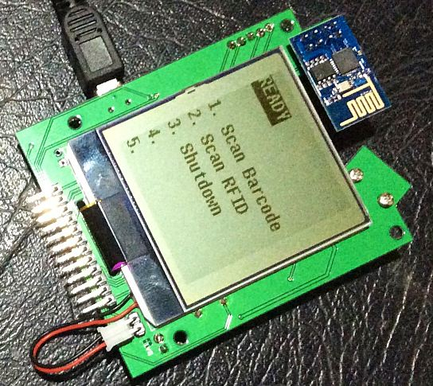
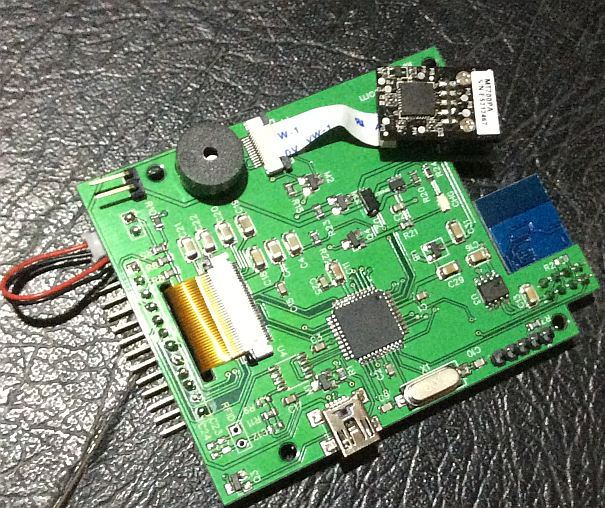

Mobile Terminal Hardware Revision 8 Is working!

Below is the component side of the board.

The chip next to the Wifi (U3) is the new 3.3V LDO regulator dedicated to the ESP8266, I also ensured I tested and re-flashed the ESP-01 module before soldering it on.
In place of the 2 x HiMH AA cells I now have a single 14500 AA 3.7V LiPo cell which says 1200mAH on the side (The word on the internet is however that these blue Ultrafire batteries are actually only good for about half that) either way a bit of a come-down in battery life for the unit.
The only real problem is the USB connector does not have a cut-out on my case, so there is going to be a bit of cutting out involved.
If you note the circuit, you can see the PIC32 is correctly wired for the USB connector so it should be possible to implement some form of boot loader for the firmware. As I have also wired the ESP8266 GPIO0 pin to a PIC digital pin I can also toggle the flashing of the ESP-01 so again making it possible at some future time to implement a USB to serial converter and updating the ESP-01 firmware also (un-soldering it is not really going to be practical)
More importantly I have been working on the rest of the project which I will explain in my next post later this week.